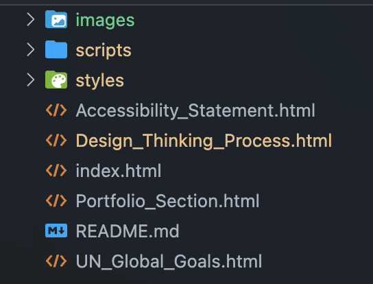
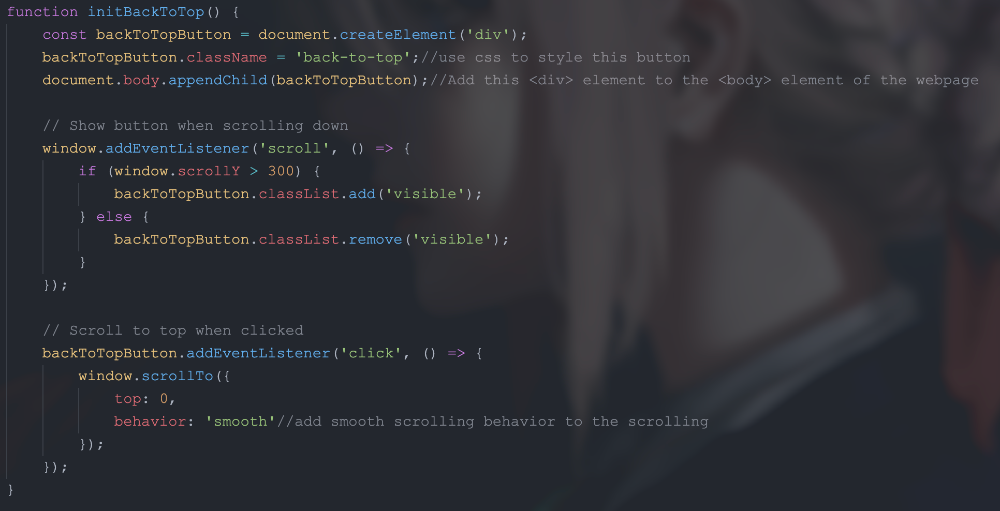

Design thinking is a user-centered approach to problem solving and innovation.
For this website, I followed the five key stages of design thinking to ensure
the site is both visually appealing and highly usable.
1. Empathize
I started by understanding the needs and expectations of my target users—students,
teachers, and potential collaborators. I conducted informal interviews and gathered
feedback on what makes a portfolio website engaging and easy to navigate.
2. Define
Based on the insights, I defined the main problems: users want quick access to my
projects, a clear sense of my skills, and a visually pleasing experience. I summarized
these needs into clear design goals for the site.
3. Ideate
I brainstormed multiple layouts, color schemes, and interactive features. Sketches
and wireframes helped me explore different ways to present my work and personality,
while keeping usability in mind.
4. Prototype
I created a working prototype of the website using HTML, CSS, and JavaScript.
This allowed me to quickly test ideas, adjust the navigation, and refine the
visual style before finalizing the content.
5. Test
I shared the prototype with friends and mentors, collecting feedback on usability,
accessibility, and aesthetics. Based on their suggestions, I improved the navigation,
color contrast, and added more project details.
Behind the Curtain
Code Structure

Project Structure - Organized folders for styles, scripts, and images
Challenging Parts
Back To Top Button
Creating a button the button will become visible when I Swipe down and when I press the button it will automatically return to the top.
Use JavaScript to realize the function
Handle button style(css)

Back To Top Button
Developer Tools Usage
Chat GPT
Used Chat GPT to help me solve some format problem
For JavaScript debugging
Just for fun use chat gpt to make the "poop" in my website